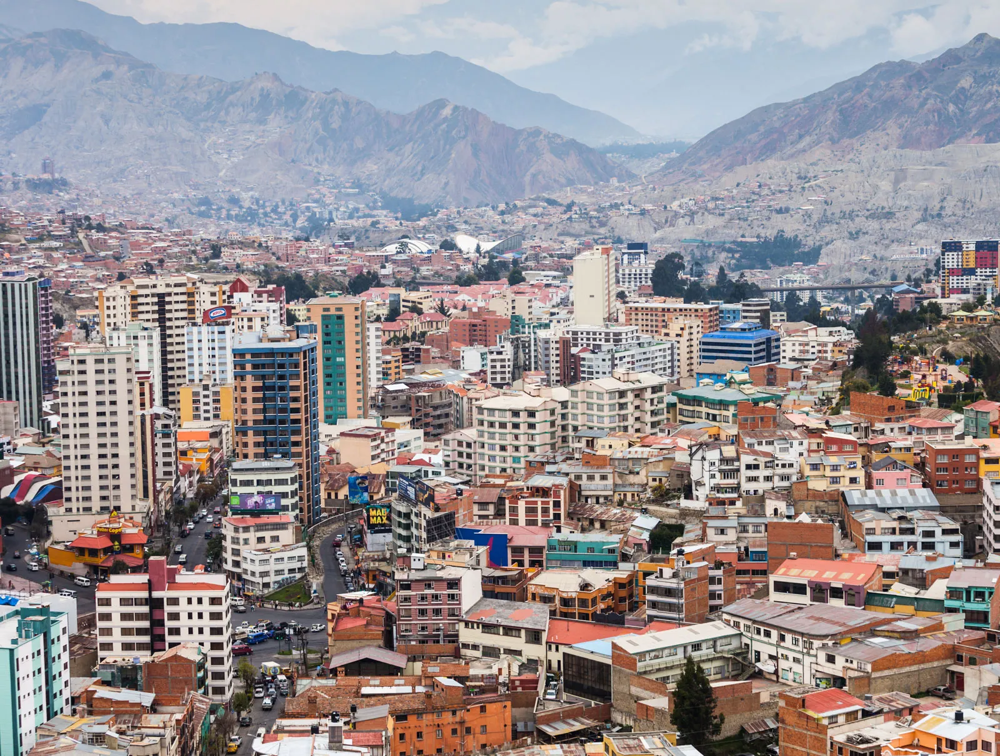

Course Work
La Paz Bolivia
La Paz, Bolivia, is the world’s highest administrative capital, situated at about 3,650 meters above sea level in a canyon created by the Choqueyapu River. The city’s streets are a blend of modern skyscrapers, colonial architecture, and vibrant markets.
La Paz Bolivia
La Paz, Bolivia, is the world’s highest administrative capital, situated at about 3,650 meters above sea level in a canyon created by the Choqueyapu River. The city’s streets are a blend of modern skyscrapers, colonial architecture, and vibrant markets.